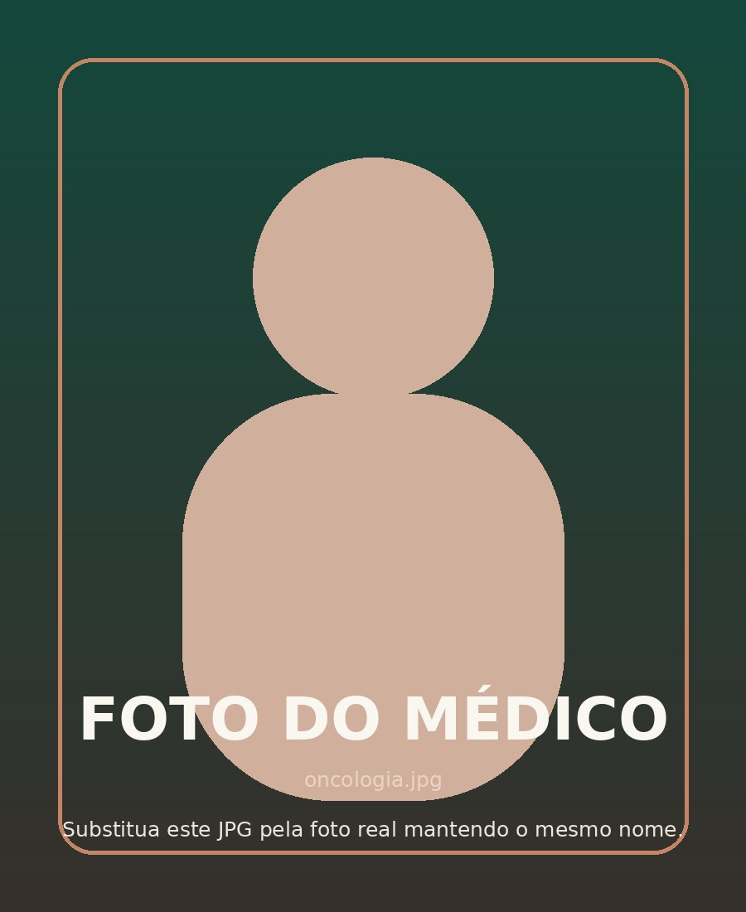
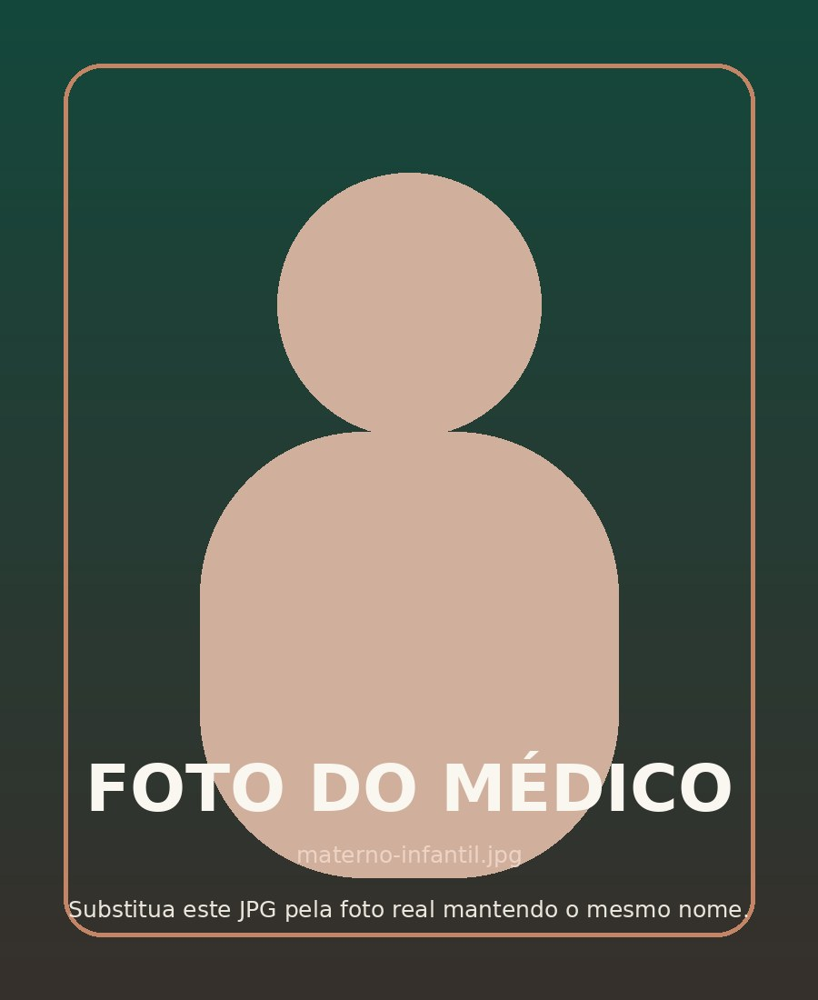

Direção Médica
Dra. Cristina Yang
Direção clínica, qualidade assistencial e integração do corpo médico.
Medicina de excelência, tecnologia e atendimento humanizado em uma estrutura organizada para acompanhar cada etapa do cuidado.
Prevenção, diagnóstico e acompanhamento cardiovascular com cuidado integrado.
Conhecer especialidade → 02Avaliação especializada do sistema nervoso, memória, movimento e qualidade de vida.
Conhecer especialidade → 03Diagnóstico, tratamento e reabilitação para mobilidade, trauma e saúde musculoesquelética.
Conhecer especialidade → 04Cuidado integral e acolhedor para acompanhar cada fase do desenvolvimento infantil.
Conhecer especialidade → 05Cuidado oncológico coordenado, com acompanhamento multidisciplinar em toda a jornada.
Conhecer especialidade → 06Saúde da mulher, prevenção, acompanhamento ginecológico e cuidado durante a gestação.
Conhecer especialidade → 07Avaliação e acompanhamento do sistema digestivo com apoio diagnóstico integrado.
Conhecer especialidade → 08Acompanhamento metabólico e hormonal com foco em prevenção e equilíbrio clínico.
Conhecer especialidade → 09Saúde da pele, cabelos e unhas com avaliação clínica e acompanhamento individualizado.
Conhecer especialidade → 10Cuidado do trato urinário e saúde masculina com abordagem preventiva e especializada.
Conhecer especialidade → 11Avaliação da saúde ocular, prevenção e acompanhamento de alterações da visão.
Conhecer especialidade → 12Cuidado em saúde mental com escuta qualificada, acompanhamento e integração assistencial.
Conhecer especialidade →Direção clínica, qualidade assistencial e integração do corpo médico.
Coordenação do tratamento, procedimentos e experiência do paciente.
Chefia da cardiologia e linhas de cuidado cardiovascular.
Chefia da neurologia e integração das linhas neuroclínicas.

Coordenação do cuidado oncológico e abordagem multidisciplinar.

Integração entre pediatria, ginecologia e obstetrícia.
Fluxos assistenciais, apoio diagnóstico e ambientes preparados para integrar profissionais, pacientes e famílias.
Especialidades agrupadas em linhas de cuidado mais claras.
Recursos que ajudam a acelerar decisões clínicas.
Do acolhimento ao acompanhamento, com continuidade.
Precisão clínica.
Presença humana.
O cuidado em saúde exige precisão, mas também clareza, confiança e uma estrutura capaz de aproximar especialidades e profissionais.
“Sua saúde em primeiro lugar.”
Selecione uma especialidade e prepare uma solicitação de atendimento.